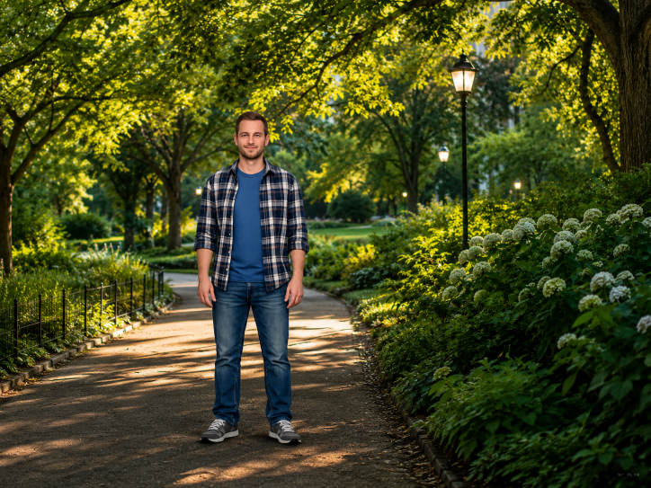
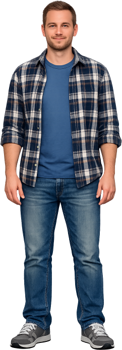

F値・シャッタースピード・ISO。この3つの関係（露出の三角形）さえ体で覚えれば、どんな場面でも狙った一枚に近づけます。まずは下のシミュレーターで、動かして感じてみましょう。
同じ明るさでも、3つのどれで稼ぐかで「ボケ・ブレ・ノイズ」が変わります。これがカメラの面白さの核心です。
レンズの穴の大きさ。F値が小さいほど光が入って明るく、背景が大きくボケます。F値が大きいと隅までシャープ。
開いている時間。速いと動きを止め、遅いと光をたくさん集める代わりに動きがブレます。
光への敏感さ。上げると暗所でも明るく撮れますが、上げすぎるとザラつき（ノイズ）が増えます。
昼の公園の実写サンプルです。3つのスライダーを動かすと「明るさ・ボケ・ブレ・ノイズ」がどう変わるか、下の判定で確かめられます。明るさを保ったまま1つを動かし、別ので取り戻す——が露出の練習です。


全部をマニュアルで決める必要はありません。「何を自分で決めたいか」でモードを選びます。
F値だけ自分で決め、明るさはカメラ任せ。初心者の入口はこれ。ポートレートも風景もまず Av。
シャッタースピードを自分で決める。スポーツ・水・乗り物など動きものに。
明るさはお任せでスナップ向き。露出補正だけ気にすればOK。
夜景や物撮りなど、明るさを完全に固定したい時。ISOオートと併用も便利。
被写体を自動で見つけて追い続けるのがR8の強み。設定を合わせれば歩留まりが一気に上がります。
人物・動物・乗り物から選択。狙う対象に合わせると、瞳や顔・体を自動で捕捉します。
人物・動物の瞳にピンポイントで合焦。ポートレートやペットで失敗が激減。
止まっている被写体に。半押しでピントを固定して構図を決める。
動く被写体を追い続ける。子ども・パレード・乗り物はこちら。
難しい理論より、まずこの4つ。意識するだけで「なんとなく良い」写真になります。
画面を9分割した線・交点に主役を置く。ど真ん中より動きと余白が出ます（グリッド表示を活用）。
主役を堂々と中央に。シンプルで力強い。背景がうるさい時にも有効。
手前に花や葉を入れてぼかす。奥行きと立体感、やわらかさが出ます（F値小さめで）。
地平線・建物の傾きは厳禁。電子水準器やグリッドで真っ直ぐに。後からでも直せます。
出発点の目安です。数値は固定ではなく「どっちに振るか」の方向感として使ってください。
光が十分。ボケを楽しみつつ、失敗の少ない設定で。
| モード | Av（絞り優先） |
| F値 | 背景をぼかすならf/2.8〜4、隅まで写すならf/8 |
| ISO | オート（上限800〜1600目安） |
| AF | 被写体検出＋瞳AF／止まってればワンショット |
手ブレと白飛びが敵。R8はIBISが無いので、固定とSSに注意。
| 構え | 三脚／柵に固定（IBIS非搭載のため重要） |
| モード | Av or M。F値はf/4〜8 |
| ISO | 固定なら低ISO、手持ちなら上げてSS稼ぐ |
| 仕上げ | RAWで撮ってシャドウを起こす |
近寄って、明るく暖かく。寄れる距離はレンズ次第。
| F値 | f/2.8〜5.6（全体を見せたいなら絞る） |
| 露出補正 | ＋に振って明るく軽やかに |
| 角度・光 | 斜め45°or真上。窓の自然光を活かす |
| 仕上げ | 現像で色温度を暖かめに |
瞳にピント、背景はとろり。主役を浮かび上がらせます。
| モード | Av、F値f/1.8〜2.8 |
| AF | 被写体検出=人物／瞳AF オン |
| SS | 手ブレ・被写体ブレ防止に1/200以上目安 |
| 背景 | 離れた背景＋望遠寄りでボケ増し |